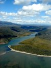
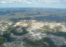
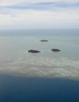
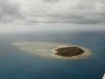
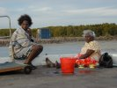

June
- 2nd
- 3rd
- 4th
- 5th
- 6th
- 7th
- 8th
- 9th
- 10th
- 11th
- 12th
- 13th
- 14th
- 15th
- 16th
- 17th
- 18th
- 19th
- 20th
- 21st
- 22nd
- 23rd
- 24th
- 25th
- 26th
- 27th
- 28th
- 29th
- 30th
July
- 1st
- 2nd
- 3rd
- 4th
- 5th
- 6th
- 7th
- 8th
- 9th
- 10th
- 11th
- 12th
- 13th
- 14th
- 15th
- 16th
- 17th
- 18th
- 19th
- 20th
- 21st
- 22nd
- 23rd
- 24th
- 25th
- 26th
- 27th
- 28th
- 29th
- 30th
- 31st
August
Well, nothing like that happened. The only thing that wasn't as it should be when I inspected Grummy on the morning of the 20th of July was a drainer I had asked GAM to replace but even that was quickly fixed.
As we would be outside mobile covered areas for several days we tried to plan a bit more ahead then usually and did a lot of phone calls asking for the quality of various airstrips, availability of AVGAS, accommodation and the like. By 11am we were airborne.
 
{kind=link}
{kind=link}
A bit of over land flying was done that day as requested by the passengers on the right hand seats (they wanted to see something different then just water on their side for a change :-).
 
{kind=link}
{kind=link}
Physically the day was a bit of a disaster. In an unsuccessful attempt to get the homepage updated the previous night we had gotten to bed quite late resulting in 5 hours of sleep only. The lack of sleep combined with a bit of stress about the 100 hourly was probably the reason we forgot everything about lunch until we got hungry again. By then it was too late. Lockhart River, where we refueled, didn't have anything assembling food. None of us felt like walking 6km into town and there was no taxi.
We had tried to arrange for accommodation on Horn or Thursday Island, but hadn't had luck (nobody seemed to be willing to pick up the phone). After refueling and parking Grummy we asked people at the airport and several suggested Gateway Resort on Horn Island, so that's where we went, as it seemed to be a lot of a hassle to get across to Thursday Island (the resort did free pickups from the airport). At $50 a head Gateway Resort was definitely the most expensive accommodation we had booked on FlacrOz ever ... and it was BAD with capital letters! Shocking you can call something like this a resort. The room was dark and smelly. 
{kind=link}
Luckily the backpackers on Thursday had vacancies and it was miles better then the "resort" at less then a third of the price.
In retrospect it was obvious we shouldn't have given Horn Island even a chance - it was a Thursday after all ;-).